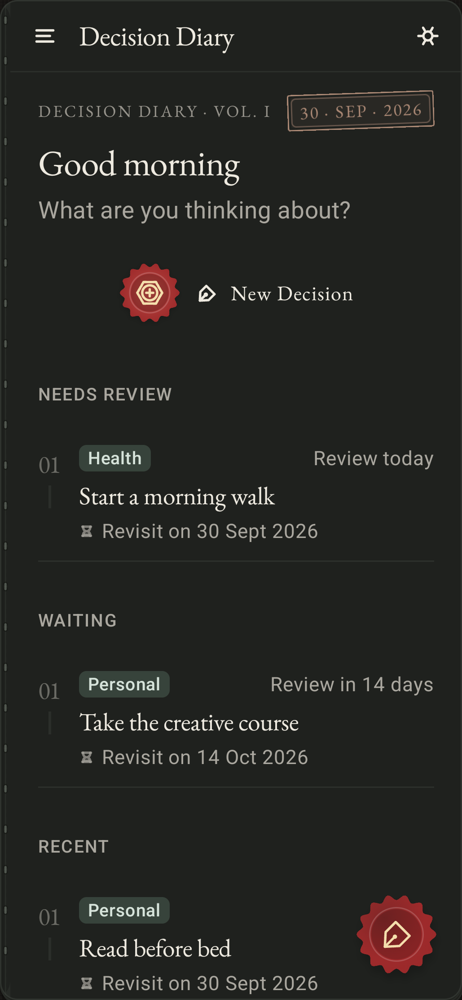
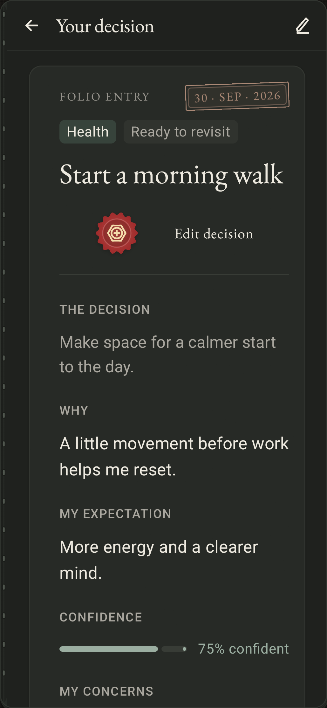
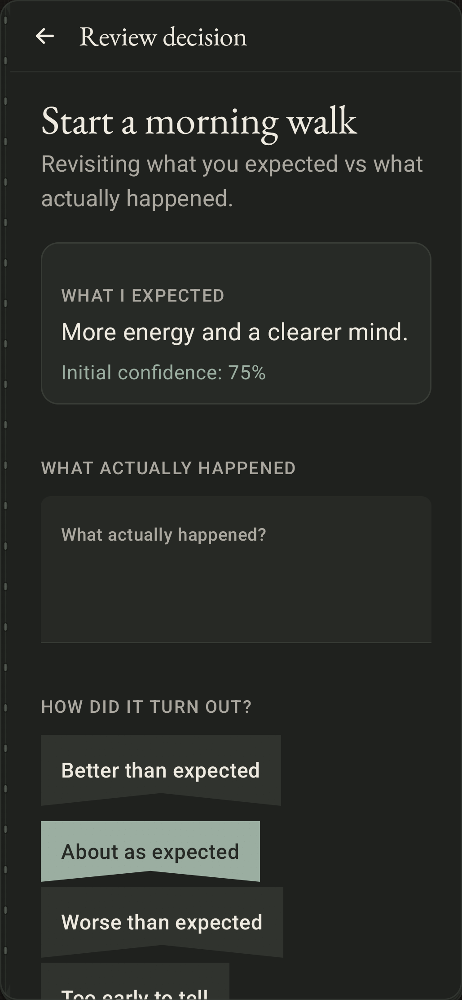
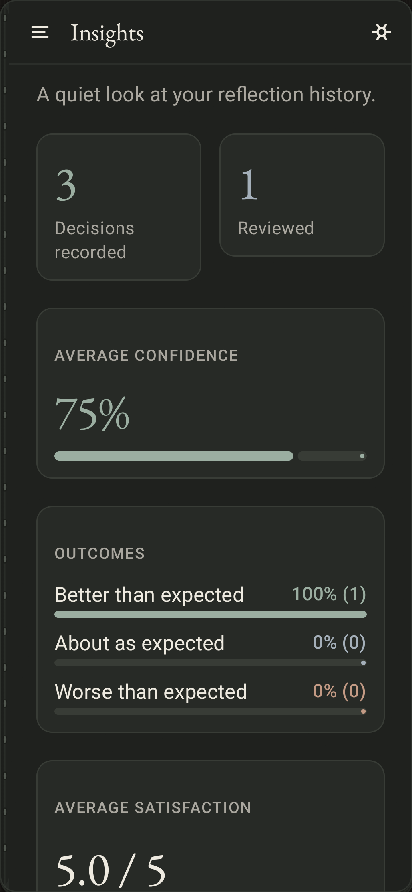
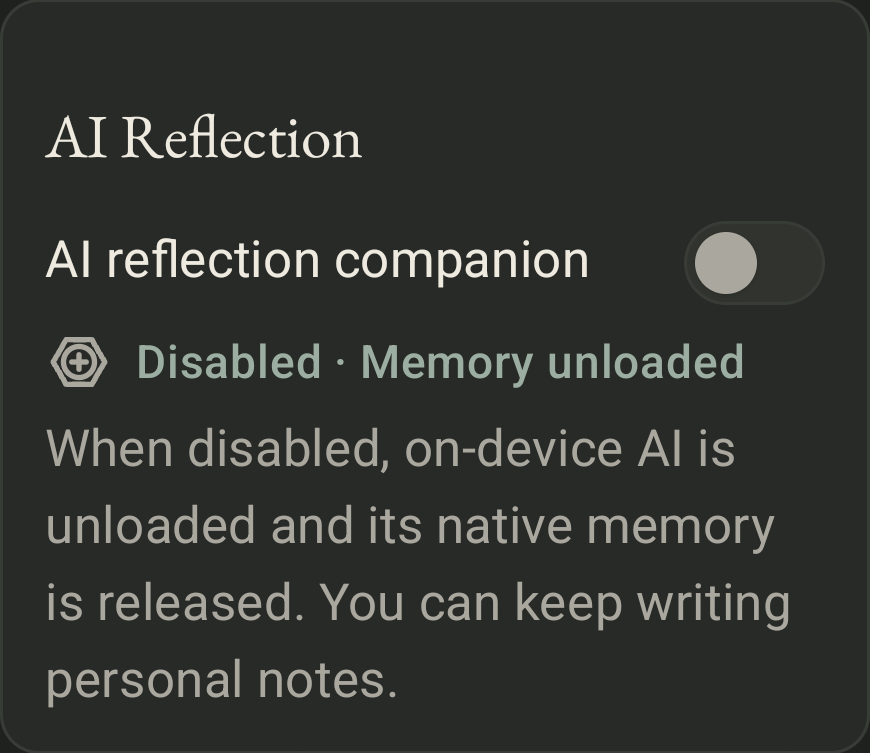
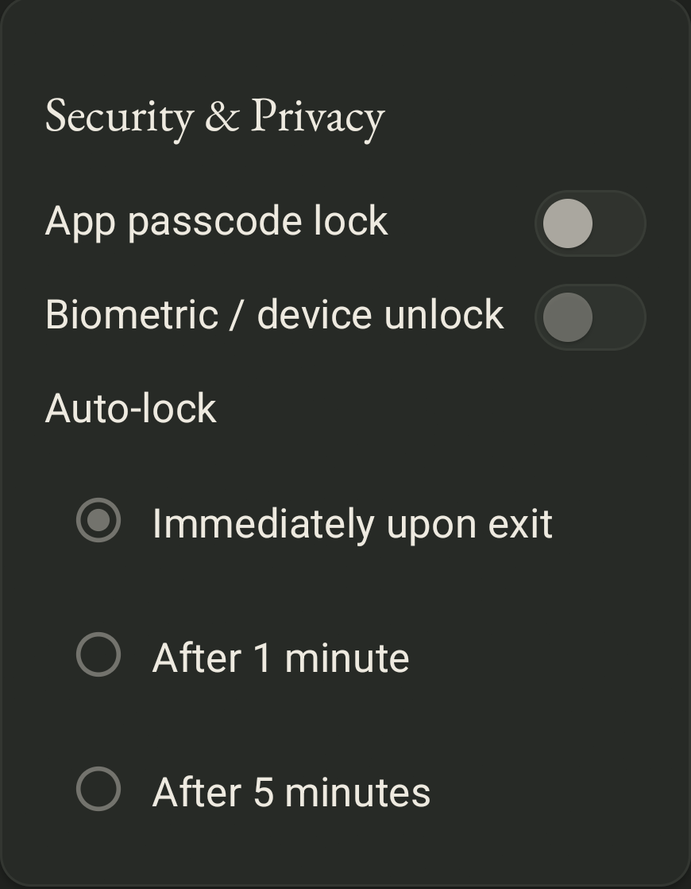

Capture the whole decision
Keep your options, reasoning, hopes, worries, and confidence together. Give your future self the context you have today.
A private notebook for Android
Some decisions deserve more than a passing thought. Write down what matters, remember why you chose it, and return when life has had its say.
Download for Android
A little structure. A lot of room to be you.
Made for thoughtful living
A quiet place to connect the choices you make today with the person you're becoming.
Keep your options, reasoning, hopes, worries, and confidence together. Give your future self the context you have today.
Choose a review date, receive an optional reminder, and compare what you expected with what actually happened.
Look back across your decisions and reviews. Find the lessons and habits that a single entry might miss.
Write personal notes or invite the optional on-device AI companion to help you explore your thoughts. You can turn AI off at any time.
Your journal stays on your device. Add a passcode, biometric unlock, and an auto-lock interval that fits your day.
Export and restore your diary yourself. Protect an archive with a passphrase, or choose a readable JSON export.
A look inside
Real app screens, with fictional sample entries.
Shown in the notebook's dark theme.





A diary belongs to its author
Decision Diary has no accounts, analytics, cloud synchronization, or Internet permission. AI reflection runs locally, with basic prompts available when the model cannot run.
App lock protects access to your notebook. Encrypted exports protect your backup files. You control when to write, when to reflect, and when to close the book.
A few practical questionsStart a new page
Free to download. No subscription. No account to create.
Download the latest APKVersion 0.2.1 · Public preview · Android 8.0 and later
About 412 MB, including the offline AI model.
Before you begin
Open this page on your Android device and tap Download. Open the downloaded APK and, if Android asks, allow installation from your browser or file manager. Follow the installation prompt. You can turn that permission off again afterward. Save a backup before replacing an existing installation.
No. After downloading the APK, the diary and optional AI work offline. The large download includes the local model so the app does not need to fetch it later. AI performance depends on your device; the diary remains usable without AI.
Yes. Turn off AI Reflection in Settings to write personal notes without companion replies. Disabling AI unloads the local model. Your previous conversations remain available to read.
Passcodes use an encrypted, device-bound credential store. You can also enable biometric/device unlock and auto-lock. Journal records use Android app-private storage; the database does not have a separate app-level encryption key. Choose a passphrase-encrypted backup to protect an exported file.
This public download is a signed development preview, version 0.2.1. You may encounter bugs. Back up important entries, and check the release notes before updating. A production signing key and broader device testing are planned before a stable release.
Open an issue on GitHub with your Android version, device model, and the steps that caused the problem. Please keep private journal entries and backup files out of public reports.